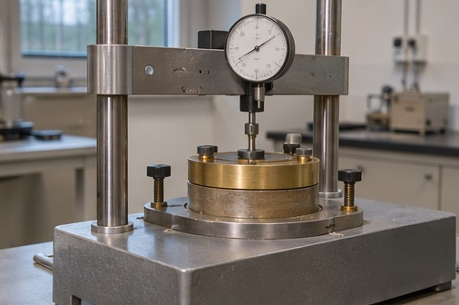

1D-konsolideringsforsøg
Belast en lerprøve trinvis i et ødometer. Prøven holdes fast sideværts af ringen, og vandet drænes gennem filtersten i top og bund. Brug arbejdskurven og et lasttrins tidskurve til at bestemme jordens parametre.
Tidskurve for lasttrinnet
Arbejdskurve
Parametre fra kurverne
Prøven i ødometeret
Ligninger til tolkning
K · modul for det valgte lasttrin
Q · stamkurvens tøjning pr. spændingsdekade
cᵥ · aflæs ved 50 % primær konsolidering
k · hydraulisk ledningsevne
Qₛ · krybetøjning pr. tidsdekade over forbelastningsspændingen
Aflæs kurverne
Flyt den blå markør, til den rammer den orange linje ved 50 % primær konsolidering. Sammenlign derefter et trin under og over forbelastningsspændingen. De orange prikker sent på tidskurven afgrænser intervallet til bestemmelse af krybehældningen.
Her er 0 og 100 % primær konsolidering markeret ud fra simuleringen. Ved et målt forsøg skal de først findes ved tolkning af tidskurven, eksempelvis med Casagrandes metode i § 6.6. Simuleringen bruger gennemsnitlig prøvehøjde i lasttrinnet og normaliserer den primære kurve til 100 % ved T = 2. Den lægger krybning til efter den praktiske afslutning af primær konsolidering ved T = 2 og viser krybning over forbelastningen.
- Δσ′, σ′f og σ′e
- spændingstilvækst samt effektiv spænding før og efter lasttrinnet (kPa)
- ε₀ og ε₁₀₀
- lodret tøjning ved 0 og 100 % primær konsolidering (decimaltal i formlerne)
- H
- længste drænvej ved 50 % konsolidering, halvdelen af den aktuelle prøvehøjde (m)
- T₅₀ og t₅₀
- tidsfaktoren 0,2 og aflæst tid til 50 % primær konsolidering (sekunder i formlen)
- cᵥ og γw
- konsolideringskoefficienten, betegnet cₖ i lærebogen (m²/s), og vandets rumvægt (10 kN/m³)
- tₐ, tᵦ, εₐ og εᵦ
- tider og tøjninger ved de to orange punkter på krybegrenen
- σ′pc
- forbelastningsspænding. Bestem Q på et trin på stamkurven.

Læs videre i lærebogen
Geoteknik, 3. udgave. Kapitel 5, §§ 5.2–5.6, s. 141–154. Kapitel 6, §§ 6.2–6.3, s. 162–167, § 6.5, s. 169–170, og § 6.6, s. 170–177.